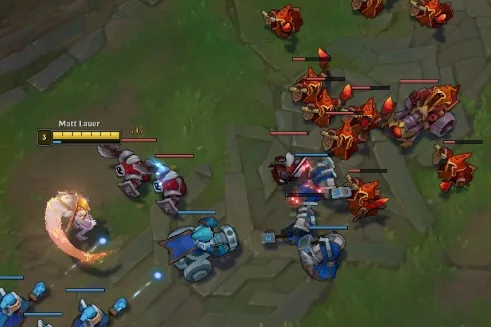
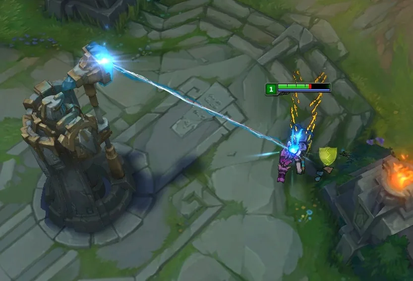
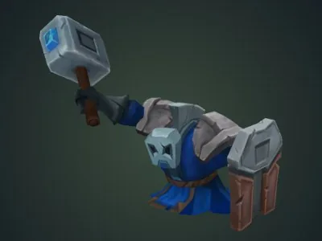
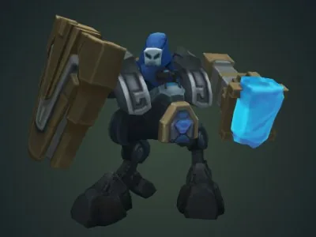

역기획서 · 리그 오브 레전드
소환사의 협곡 미니언·포탑 시스템 기획 (2편)
설계 목표에서 미니언 골드 · 경험치와 포탑 수치를 정하고, 라인전 경제와 14분 기준점, 보완 기획을 다룹니다.
표지와 설계 목표

시스템 역기획 · 포트폴리오
리그 오브 레전드 — 소환사의 협곡
미니언 · 포탑 시스템 기획서 (2편)
설계 목표 · 수치 결정 · 경제 밸런스 — 2026 시즌(26.x 패치) 기준
장대규
jdk47888@naver.com · 010-8854-7342
01 / 16
2편 표지입니다.
자세히 보기
1편(맵 구조)에 이어 미니언 · 포탑 시스템을 기획자 관점에서 설계합니다. 수치는 26.x 실제 값입니다. 근거는 해당 수치의 설계 목표를 재구성한 것이며, 라이엇 공식 설명이 아닙니다.
설계 목표 — 수치 결정 기준
미니언 · 포탑 수치는 아래 4개 목표에 따라 결정합니다.
G1
라인전 기량의
성장 반영
막타는 상대 견제 · 포탑 아래에서 타이밍을 맞춰야 합니다. 막타 기량 차이가 성장 차이가 됩니다.
미니언 골드 · 경험치
G2
미니언 동반
공성
챔피언 혼자 포탑을 밀 수 있으면 라인을 무시한 기습이 최적 전략이 됩니다.
포탑 보호 · 타겟팅
G3
시간 경과에 따른
공성력 증가
수비만으로 버틸 수 있으면 경기가 끝나지 않고 교착됩니다.
웨이브 주기 · 대포
G4
우위 보상과
역전 여지 유지
초반 격차로 승패가 확정되면 남은 경기 시간이 무의미해집니다.
방패 · 현상금 · 보정
미니언 기획
→
포탑 기획
→
경제 · 밸런스
→
보완 기획 · 방패 회복
설계 목표
02 / 16
[발표] 2편은 1편 맵 위에서 라인전 · 공성 · 경제를 구동하는 미니언과 포탑을 다룹니다.
자세히 보기
설계 목표에 따라 수치를 정하는 기획서 형식입니다. G1: 막타 · 견제 · 레벨 경쟁 차이를 골드 · 경험치로 바로 반영합니다. G2: 웨이브 없이는 포탑이 무너지지 않게 합니다. 웨이브 관리가 운영이 됩니다. G3: 공성력 · 수입을 시간에 따라 올려 수비만으로 버틸 수 없게 합니다. G4: 앞선 쪽 보상 장치와 뒤처진 쪽 따라잡기 장치를 짝으로 둡니다. 마지막 보완 기획은 14분 전 방패 골드 격차(G4의 공백)를 다룹니다. 각 장은 설계 목표 → 제약 조건 → 수치 결정 → 근거 계산 → 의도한 플레이 순서로 구성합니다.
미니언 기획
라인전 — 웨이브 · 챔피언 · 포탑
라인전: 미니언 웨이브를 사이에 두고 챔피언이 포탑 사거리 안팎에서 성장을 겨루는 구간

아군 웨이브
적 웨이브
챔피언

포탑
챔피언 (체력 바)
포탑 공격
미니언 웨이브
30초마다 양 팀 6마리씩 출발. 골드 · 경험치 · 공성 자원
챔피언
웨이브 옆에서 막타(마지막 일격 → 골드) 수급 · 상대 견제
포탑
라인 안전지대. 평소 미니언 우선 공격, 아군을 공격한 적은 즉시 공격
미니언
|
포탑
|
경제 · 밸런스
|
보완 기획
미니언 · 라인전
03 / 16
[발표] 이후 장에서 다룰 세 요소를 한 화면에 표시합니다.
자세히 보기
왼쪽: 아군(파랑) · 적(빨강) 웨이브 충돌 지점에서 챔피언이 막타 수급 · 상대 견제를 수행합니다. 오른쪽: 포탑은 사거리(750) 안의 적을 공격합니다. 평소에는 미니언을 먼저 공격합니다. 아군 챔피언을 공격한 적 챔피언은 즉시 공격합니다. 이미지는 왼쪽이 실제 게임 화면 캡처, 오른쪽이 포탑 공격 장면(리그 오브 레전드 위키, 구버전 화면)입니다.
미니언 — 한 유닛의 4개 역할
30초마다 양 팀에 같은 조건으로 지급되는 공용 자원
막타 — 미니언 체력을 0으로 만드는 마지막 일격. 막타를 넣은 챔피언만 골드 획득

경제
골드:
막타 챔피언만
타이밍 · 상대 견제 속 수급
→ 기량 = 수입

성장
경험치:
근처 아군 전원
레벨까지 막타에 연동 시
격차 이중 확대

공성
미니언 동반 시에만
포탑 피해 정상 적용
라인을 무시한
포탑 기습 방지

교전
아군을 공격한 적
우선 공격
미니언 수 우세 측
견제 유리
골드 = 기량, 경험치 = 참여 → 기량 우위는 골드로 반영, 레벨 격차는 완만하게 확대
미니언
|
포탑
|
경제 · 밸런스
|
보완 기획
미니언 · 역할
04 / 16
[발표] 미니언에 경제 · 성장 · 공성 · 교전 4개 역할을 부여합니다.
자세히 보기
역할마다 규칙 1개를 둡니다. 막타(Last hit)는 미니언 체력을 0으로 만드는 마지막 일격입니다. 여러 챔피언이 공격해도 막타를 넣은 챔피언만 골드를 받습니다. 핵심은 골드와 경험치의 지급 조건을 분리하는 것입니다. 골드는 막타 챔피언만 받습니다(G1, 기량 차이 = 수입 차이). 경험치는 막타 없이도 근처 아군 전원이 받습니다. 경험치까지 막타에 연동하면 기량 차이가 골드와 레벨 양쪽에서 이중으로 벌어집니다. 공성: 근처에 아군 미니언이 있어야 포탑 피해가 정상 적용됩니다(G2, 포탑 장에서 상세 설명). 교전: 미니언은 아군 챔피언을 공격한 적 챔피언을 최우선으로 공격합니다. 미니언 수가 많은 쪽이 견제에 유리합니다.
웨이브 — 30초 생성 주기
목표 G1
라인전에 시간 단위를 부여해 귀환 · 견제 · 갱킹 계획을 가능하게 합니다.
0:30
첫 생성
30초
생성 주기
3 + 3
근접 + 원거리
90초
대포 웨이브
3웨이브마다
30초 설정 근거
웨이브 1개 정리 시간(20 — 30초)에 맞춥니다. 짧으면 미니언이 누적되고, 길면 라인 공백이 생깁니다.
귀환 1회 ≈ 웨이브 1.5개 손실
골드 약 170 · 경험치 약 450 손실 → 귀환 시점이 판단 요소가 됩니다.
대포 90초 = 업그레이드 90초
대포 웨이브 = 강화된 웨이브의 기준점
라이너는 '다음 대포 웨이브 전에 귀환'처럼 30초 · 90초 단위로 계획합니다.
미니언
|
포탑
|
경제 · 밸런스
|
보완 기획
미니언 · 웨이브
05 / 16
[발표] 제약: 주기가 웨이브 정리 시간보다 짧으면 미니언이 누적됩니다.
자세히 보기
길면 라인에 공백이 생깁니다. 결정: 정리 시간(약 20~30초)에 맞춰 30초로 설정합니다. 근거 계산: 귀환 8초 + 복귀 이동 30~40초 ≈ 웨이브 1.5개이므로 골드 약 170, 경험치 약 450을 잃습니다. 귀환 비용이 수치로 드러나므로 귀환 시점이 판단 요소가 됩니다. 구성은 근접 3(체력 465, 전열)과 원거리 3(사거리 550, 후열)입니다. 미니언 간에도 전열 · 후열 구도가 생깁니다. 대포는 3웨이브(90초)마다 등장합니다. 미니언 업그레이드 주기 90초와 같으므로 대포 웨이브가 강화된 웨이브의 기준점이 됩니다. 수치 출처는 26.x 위키입니다(첫 웨이브 0:30, 대포 첫 등장 1:30).
골드 — 개인 기량에 따른 재화 수급
목표 G1
파밍만으로 첫 전설 아이템 10분대 완성 — 라인전 중 아이템 성능 1회 상승
102
웨이브 1개 골드
근접 20 × 3 + 원거리 14 × 3
→
분당 312
웨이브 190 (막타 80%)
+ 자동 획득 골드 122
→
10분 40초
전설 아이템 가격 3,000 ÷ 312
≈ 9.6분 (1:05부터)
막타 난이도 요인 — 골드 = 기량 근거
1
타이밍
마지막 일격만 인정됩니다. 미니언 체력이 내 공격력 아래로 떨어지는 순간을 맞춰야 합니다.
2
상대 견제
막타 접근 시 상대 챔피언의 견제를 받습니다.
막타와 체력 관리를 동시에 해야 합니다.
3
포탑
포탑 아래에서는 포탑이 미니언 체력을 크게 깎습니다.
포탑 공격을 반영해 막타 시점을 계산합니다.
막타 +10% = 14분 누적 약 +300골드 = 처치 1회 값 — 막타 기량을 교전 승리와 같은 가치로 설정
미니언
|
포탑
|
경제 · 밸런스
|
보완 기획
미니언 · 골드
06 / 16
[발표] 목표는 파밍만으로 첫 전설 아이템을 10분대에 완성하는 것입니다.
자세히 보기
제약 조건은 전설 아이템 2,600~3,600(대부분 약 3,000), 시작 골드 500, 패시브 10초당 20.4(1:05부터)입니다. 분당 웨이브 골드(막타 100%)는 2웨이브 × 102 + 대포 50 × 2/3 ≈ 237입니다. 막타 80% 기준 190에 패시브 122를 더하면 분당 약 312입니다. 3,000 ÷ 312 ≈ 9.6분이므로 수입이 시작되는 1:05 기준 약 10분 40초에 완성합니다. 골드 = 기량인 근거: 골드는 마지막 일격에만 지급됩니다. ① 미니언 체력이 내 공격력 아래로 떨어지는 시점을 맞춰야 합니다. ② 막타 접근 시 상대 챔피언의 견제를 받습니다. ③ 포탑 아래에서는 포탑이 미니언 체력을 크게 깎아 막타 시점이 바뀝니다. 미니언 골드는 체력 높은 근접 20, 체력 낮은 원거리 14, 포탑이 가장 먼저 공격해 막타가 가장 어려운 대포 50으로 차등을 둡니다. 처치 골드 300은 웨이브 약 3개 분량이므로 수입 중심은 파밍이고, 처치는 가속 수단입니다. 막타 10% 차이는 분당 약 24골드 × 약 13분 ≈ 300골드로, 처치 1회와 같습니다.
경험치 — 레벨 도달 시점 설계
목표 G1 · G4
솔로 라인은 레벨, 바텀은 2인 협공으로 전투력 확보
279
vs
280
웨이브 1 경험치 / 레벨 2 요구량
1 차이 → 두 번째 웨이브 첫 미니언 경험치를
먼저 얻는 쪽이 레벨 2
| 도달 | 솔로 라인 | 바텀 2인 |
|---|---|---|
| 레벨 2 | 웨이브 1 + 1마리 | 웨이브 1 + 3마리 |
| 레벨 6 | 약 5분 | 약 7분 |
| 레벨 11 | 약 13분 | 14분 · 레벨 9 |
미니언 경험치 100% 수급 기준. 레벨 11 = 궁극기 2레벨 →
라인전 종료 시점 13 — 14분에 전투력 2차 상승
2인 공유 시 각자 65% (합 130%) → 개인 성장은 느리나 합류 플레이에 손실이 없습니다.
미니언
|
포탑
|
경제 · 밸런스
|
보완 기획
미니언 · 경험치
07 / 16
[발표] 미니언 경험치는 근접 62 · 원거리 31 · 대포 75로 정합니다.
자세히 보기
레벨업 필요량은 280에서 시작해 레벨마다 100씩 늘어납니다. 2인이 공유하면 각자 65%(합 130%)를 받습니다. 웨이브 1 경험치는 279, 레벨 2 요구량은 280입니다. 1 차이로 설정해 첫 웨이브만으로는 레벨 2에 도달할 수 없습니다. 첫 웨이브를 먼저 정리하고 두 번째 웨이브 첫 미니언 경험치를 먼저 얻는 쪽이 레벨 2를 선점합니다. 그 결과 초반 2분에 레벨 2 경쟁이 생깁니다. 도달 시점(미니언 경험치 완전 수급 기준): 솔로 라인은 레벨 6이 웨이브 9(약 5분), 레벨 11(궁극기 2레벨)이 웨이브 25(약 13분)로, 라인전 종료 시점에 맞춥니다. 바텀은 레벨 6이 웨이브 13(약 7분)이고, 14분에 레벨 9입니다. 따라잡기: 1레벨 이상 뒤처지면 미니언 경험치가 +20%에서 최대 +240%까지 늘어납니다. 라인에 남아 있으면 레벨 격차가 줄어듭니다.
시간 경과 — 공성력이 오르는 웨이브
목표 G3
웨이브 강화 · 주기 단축으로 수비만으로는 버틸 수 없게 합니다.
237
0.67
0 — 14분
287
1.2
14 — 25분
341
2.4
25 — 30분
390
3.0
30분 —
■ 분당 웨이브 골드
■ 분당 대포 수
4.5배
분당 대포
대포 3 → 2 → 1웨이브마다
+65%
분당 웨이브 골드
주기 30 → 25 → 20초
14분부터 대포 웨이브에서 근접 1마리 제외 → 미니언 수 유지, 공성력만 상승
후반에는 웨이브 1개 방치 시 포탑 피해 발생 — 사이드 라인 관리가 승패 변수
미니언
|
포탑
|
경제 · 밸런스
|
보완 기획
미니언 · 시간 곡선
08 / 16
[발표] 웨이브 주기는 30초에서 14분에 25초, 30분에 20초로 줄어듭니다.
자세히 보기
대포는 3웨이브마다에서 14분에 2웨이브마다, 25분에 매 웨이브로 늘어납니다. 14분 이후 대포 웨이브에서 근접 1마리를 제외합니다. 미니언 총수는 유지하고 공성력만 올립니다. 억제기 파괴 시 슈퍼 미니언이 대포를 대체합니다(3개 파괴 시 라인당 2). 제약: 강화가 빠르면 라인전이 짧아집니다. 강화가 늦으면 후반이 교착됩니다. 분당 웨이브 골드는 막타 100% 계산값입니다(대포 골드 업그레이드를 반영한 근사치).
포탑 기획
포탑 — 단계 구조와 역할
외곽은 라인전 동안 유지, 이후 단계는 앞선 팀이 빠르게 진행하도록 체력 차등
외곽
9,000
→
내부
5,000
→
억제기 포탑
4,750
→
넥서스 포탑
3,500
안전지대
사거리 750 >
챔피언 최대 약 650
라인전 열세 측의
회복 공간
진행 단계
외곽 → 내부 → 억제기
순서대로만 파괴
기습 1회로
기지 진입 불가
공성 목표
미니언 없으면
받는 피해 −80%
웨이브 동반 공성
(G2)
보상
방패 5장
장당 120골드
라인 우위를
즉시 골드로 환산
외곽 9,000 = 내부의 1.8배 → 초반에는 라이너의 안전지대, 15분부터는 팀 진행도 지표
미니언
|
포탑
|
경제 · 밸런스
|
보완 기획
포탑 · 역할 · 단계
09 / 16
[발표] 포탑의 역할은 안전지대 · 진행 단계 · 공성 목표 · 보상 · 시야(1,350)입니다.
자세히 보기
체력은 단계별로 차등을 둡니다. 외곽은 9,000입니다(26.1에서 5,000→9,000). 라인전 동안 외곽이 유지되는 시간 버퍼를 확보합니다. 11~15분에 외곽 저항을 단계적으로 낮춥니다. 라인전 종료 시점에 외곽이 파괴 가능한 상태로 전환됩니다. 내부 5,000 · 억제기 포탑 4,750 · 넥서스 포탑 3,500은 우위 팀의 진행 속도를 확보합니다. 억제기 포탑은 체력 30 · 75% 구간까지 재생합니다. 넥서스 포탑은 파괴 3분 뒤 40%로 재생성되므로 수비 성공이 회복으로 이어집니다(G4). 제약: 외곽이 일찍 무너지면 라인전이 성립하지 않습니다. 기지가 단단하면 후반이 끝나지 않습니다. 넥서스는 억제기 1개 이상과 넥서스 포탑 2개를 파괴하면 공격할 수 있습니다.
공성 = 웨이브 관리
목표 G2
포탑 공략은 웨이브 동반 시에만 가능하게 합니다.
−80%
아군 미니언이 없으면
포탑이 받는 피해
단독 공격 시 피해 20%만 적용
→ 라인을 무시한 기습 차단
1
웨이브 도착
보호 해제
2
포탑 공성
미니언 웨이브 잔존 시간 동안
3
웨이브 소멸
대포부터 처치
4
보호 재가동
미니언 소멸 3초 후
공성 속도 = 웨이브 관리 기량 — 웨이브 쌓기 · 사이드 밀어 두기 운영 발생
미니언
|
포탑
|
경제 · 밸런스
|
보완 기획
포탑 · 공성
10 / 16
[발표] 제약: 챔피언 단독으로 포탑을 빠르게 파괴할 수 있으면 라인을 무시하고 포탑만 노리는 플레이(백도어)가 최적 전략이 됩니다.
자세히 보기
결정: 근처에 적 미니언 · 소환된 전령이 없으면 포탑이 받는 피해가 80% 줄어듭니다(고정 피해 포함). 보호는 해제 후 3초 뒤 재가동됩니다. 미니언의 포탑 피해는 60%, 대포는 84%입니다. 포탑은 대포 · 슈퍼 미니언부터 공격합니다. 따라서 대포를 오래 살려 두는 운영(앞 웨이브 쌓기)이 공성 기술이 됩니다. 방패가 깨질 때마다 20초간 저항이 강화됩니다. 한 번에 몰아치는 공성보다 여러 웨이브에 나눈 공성이 효율적입니다.
방패 — 같은 보상, 늘어나는 공략 비용
목표 G1
라인 우위를 즉시 골드로 환산해 라인을 밀 동기 부여
1장
900
10%
2장
1,350
25%
3장
1,800
45%
4장
2,250
70%
5장
2,700
100%
120
방패 1장 골드
≈ 웨이브 1개 — 같은 단위로 비교
5장 합계 600골드
+450
장마다 필요 피해 증가
900 → 2,700
+300
첫 포탑
= 처치 1회
120 → 80
외곽 방패 골드 감소
11:00부터 1분마다 10골드씩 감소 (15:00에 80)
→ 14분 이후 목표가 오브젝트로 이동
첫 장은 1회 우위로, 마지막 장은 지속 우위로 파괴됩니다.
미니언
|
포탑
|
경제 · 밸런스
|
보완 기획
포탑 · 방패
11 / 16
[발표] 제약: 방패 골드가 크면 초반 격차가 고착됩니다.
자세히 보기
작으면 라인을 밀 이유가 없어 라인전이 소극적이 됩니다. 결정: 외곽 · 내부 · 억제기 포탑 모두 방패 5장, 장당 120골드입니다(내부 · 억제기는 600 ÷ 5). 방패는 잃은 체력 10/25/45/70/100% 지점에서 깨집니다. 외곽 9,000 기준 장별 필요 피해는 900 → 1,350 → 1,800 → 2,250 → 2,700으로, 장마다 450씩 늘어납니다. 120은 웨이브 1개(102~119)와 비슷합니다. 5장 600은 처치 2회, 첫 포탑 +300은 처치 1회와 같습니다. 포탑 보상을 처치 보상과 같은 단위로 비교할 수 있습니다. 근처 공격 측에만 지급해 라인 우위를 만든 챔피언에게 보상을 집중합니다. 외곽 방패 1장 골드는 11:00부터 1분마다 10골드씩 줄어 15:00에 80이 됩니다(120 → 80). 14분 이후 목표가 방패에서 오브젝트로 이동합니다. 수치는 26.1 패치 노트 기준입니다(방패 영구화).
경제 · 밸런스
14분 기준점 — 라인전에서 운영 단계로 전환
14분 기준점 = 솔로 라이너 전설 아이템 1개 + 레벨 11
첫 전설 아이템
외곽 방패 골드 감소 · 120 → 80
외곽 포탑 저항 감소
레벨 11 · 궁극기 2레벨
사이드 라인 속도 보정 종료
웨이브 25초 · 대포 2배
오브젝트 현상금 시작
9분
10분
11분
12분
13분
14분
15분
16분
성장 신호 — 첫 전설 아이템 · 궁극기 2레벨: 라인 밖 교전 능력 확보
라인 신호 — 속도 보정 종료 · 방패 가치 하락: 라인 체류 동기 감소
목표 신호 — 포탑 약화 · 대포 증가 · 현상금: 라인 이탈 동기 증가
챔피언 성장 시점과 라인전 종료 · 운영 단계 전환 시점을 14분에 일치시킵니다.
미니언
|
포탑
|
경제 · 밸런스
|
보완 기획
경제 · 밸런스 · 14분
12 / 16
[발표] 14분 예산(막타 80%, 라인 체류 90%)은 시작 500 + 패시브 약 1,580 + 미니언 약 2,470(웨이브 26 · 대포 8) = 약 4,550입니다.
자세히 보기
시작 아이템을 빼면 약 4,050으로, 전설 아이템 1개와 신발 · 부품에 해당합니다. 경험치는 약 7,070으로 레벨 10~11입니다. 바텀 원거리 딜러는 골드가 같고 경험치가 65%여서 레벨 8~9입니다. 바텀의 레벨 열세는 2인 협공으로 보완합니다. 기준점에 맞춰 정렬한 장치는 첫 전설 아이템 약 10:30, 외곽 방패 골드 · 저항 감소 11~15분, 솔로 레벨 11 약 13분, 사이드 라인 속도 보정 13:30에 0(2번째 웨이브 +111에서 웨이브마다 −4.5 → 111 ÷ 4.5 ≈ 24.7웨이브), 14:00 웨이브 25초 · 대포 2웨이브마다, 오브젝트 현상금 14:00부터입니다. 1편 오브젝트 시각(유충 소멸 14:45, 전령 15:00)도 같은 구간입니다. 성장 신호(아이템 · 레벨) · 라인 신호(속도 보정 종료 · 방패 가치 하락) · 목표 신호(포탑 약화 · 대포 증가 · 현상금)가 같은 구간에 발생합니다.
격차 관리 — 우위 유지와 역전 여지 확보
목표 G4
아이템 격차는 남기고, 레벨 격차는 좁힙니다.
앞선 쪽 — 골드 · 공성
- 처치 300 = 웨이브 3개
- 방패 120 · 첫 포탑 +300
- 미니언 밀기 강화 최대 +60%
뒤처진 쪽 — 경험치 · 현상금
- 미니언 경험치 최대 +240%
- 처치 경험치 레벨 차 1당 +20%
- 현상금 · 오브젝트 현상금(14분~)
경험치 따라잡기 근거 — 레벨 격차가 줄면 아이템 열세에서도 교전 역전 가능
격차 관리 공백: 0 — 14분 방패 골드(라인당 최대 1,800)를 되찾을 수단이 없습니다.
경험치 따라잡기는 레벨만 좁히고, 방패 골드는 앞선 쪽에 그대로 쌓입니다.
미니언
|
포탑
|
경제 · 밸런스
|
보완 기획
경제 · 밸런스 · 격차 관리
13 / 16
[발표] 설계 원칙: 앞선 쪽은 골드 · 공성 진행으로 보상합니다.
자세히 보기
뒤처진 쪽은 경험치로 따라붙게 합니다. 우위 환산 장치는 처치 골드 300(레벨 7부터 최대 420), 방패 120(근처 공격 측) · 첫 포탑 +300, 미니언 밀기 강화(평균 레벨 높은 팀 미니언 피해 최대 +60%, 3:30 이후), 역할 퀘스트 점수(방패 40 · 포탑 50)입니다. 따라잡기 장치는 미니언 경험치 +20%~+240%(1레벨 이상 차이, 적 미니언 레벨 6 이후), 처치 경험치 레벨 차 1당 ±20%, 현상금 최대 +700, 오브젝트 현상금 14:00 이후 최대 1,000(팀 균등)입니다. 공백: 따라잡기 장치는 경험치와 현상금이고, 방패 골드를 되찾는 장치는 없습니다. 26.1 이후 내부 · 억제기 방패도 시작부터 수확할 수 있어, 14분 전 한 라인에서 최대 1,800(포탑 3개 × 방패 5장 × 120, 처치 6회분)이 앞선 쪽에 쌓입니다. 방패 골드 공백은 보완 기획(방패 회복)에서 다룹니다.
보완 기획
보완 기획: 방패 회복 — 방어 성공의 보상
목표 G4
열세 팀에 방어 성공 시 방패 회복이라는 목표 부여
1
공격
적이 방패 파괴
→
2
방어 반격
포탑을 공격한 적을
10초 안에 처치
→
3
방패 회복
깨진 방패 1장 복구
→
4
재공격 비용
같은 구간 재공략 필요
2장
포탑당 상한
교착 방지
3분
쿨다운
같은 교전 반복 방지
60
회복 방패 골드
120의 절반 · 재수확 악용 방지
억제기 제외
적용 대상
후반 기지 교착 방지 (G3)
열세 팀: 포탑 근처 교전 참여 동기 확보 · 앞선 팀: 방패 회복 리스크를 안고 공성
미니언
|
포탑
|
경제 · 밸런스
|
보완 기획
보완 기획 · 방패 회복
14 / 16
[발표] 결정: 포탑에 피해를 준 적 챔피언을 10초 안에 포탑 사거리(750) 안에서 처치하면 깨진 방패 1장을 회복합니다.
자세히 보기
판정을 '포탑을 공격한 적 처치'로 한정해 단순 미니언 처리로는 회복되지 않게 합니다. 제약: 회복이 쉬우면 교착이 생기고 경기 시간이 늘어납니다(G3와 충돌). 그래서 포탑당 최대 2장(5장 중 절반 미만), 쿨다운 3분(웨이브 6개 주기), 회복 방패 골드 60(재수확 악용 방지), 억제기 포탑 제외(후반 교착 방지)로 제한합니다. 검증 지표는 포탑 근처 교전 승률, 포탑당 회복 횟수, 평균 경기 시간(+2분 이내 목표)입니다. 수치는 적용 전 제안이며, 대안 비교와 측정 기준은 다음 장에 정리했습니다.
보완 기획: 대안 비교와 효과 측정 기준
목표 G4
방패 골드 격차를 줄이되, 라인 우위의 보상은 남깁니다.
| 대안 | 방식 | 한계 | 판단 |
|---|---|---|---|
| A 방패 골드 하향 | 장당 120 → 80 | 라인을 밀 동기가 줄어듦 (G1과 충돌) | 기각 |
| B 열세 팀 골드 보정 | 방패를 잃은 팀에 골드 일부 지급 | 행동 없이 받는 보상 · 소극적 라인전 유도 | 기각 |
| C 방패 회복 | 방어 성공 시 깨진 방패 1장 복구 | 회복 판정 조건이 늘어남 | 채택 |
회복 상한: 포탑당 2장 × 60골드 = 120골드 재수확 · 억제기 포탑 제외
→ 라인당 최대 240골드(외곽 · 내부)로, 1,800골드 격차를 뒤집지 않고 줄이는 규모입니다.
적용 전 제안이므로, 아래는 결과가 아니라 적용 후 확인할 기준입니다.
측정 지표 1
포탑 근처 교전 승률
열세 팀이 포탑 근처에서 이기는 비율 증가
측정 지표 2
포탑당 방패 회복 횟수
상한 2장 중 평균 사용량
측정 지표 3
평균 경기 시간
증가 폭 +2분 이내 유지
미니언
|
포탑
|
경제 · 밸런스
|
보완 기획
보완 기획 · 대안과 평가
15 / 16
[발표] 14분 전 방패 골드 격차를 다루는 대안 세 가지를 비교했습니다.
자세히 보기
A 방패 골드 하향은 격차를 줄이지만 라인을 밀 동기도 함께 줄어 G1과 충돌합니다. B 열세 팀 골드 보정은 행동 없이 받는 보상이라 라인전을 소극적으로 만듭니다. C 방패 회복은 방어에 성공했을 때만 보상하므로 채택했습니다. 회복은 포탑당 2장, 회복 방패 골드 60으로 제한해 라인당 최대 240골드만 되찾을 수 있습니다. 1,800골드 격차를 뒤집지 않고 줄이는 규모로, 앞선 쪽의 우위 보상은 유지됩니다. 효과는 열세 팀의 포탑 근처 교전 승률, 포탑당 방패 회복 횟수, 평균 경기 시간(+2분 이내)으로 확인합니다. 아직 적용 전인 제안이므로 결과가 아니라 적용 후 확인할 기준입니다.
결론
결론 — 수치 결정과 의도한 플레이 경험
G1
골드는 막타, 경험치는 체류 기준 지급
→
기량 차이 = 수입 차이, 레벨 격차는 완만하게
G1
웨이브 경험치 279 · 레벨 2 요구 280
→
초반 2분의 레벨 2 경쟁
G2
미니언 없는 포탑 피해 −80%
→
웨이브 관리 = 공성 운영
G3
주기 · 대포 빈도를 시간에 따라 상승
→
수비만으로 버틸 수 없는 후반
G3
7개 장치를 14분에 정렬
→
라인전 → 운영 단계 전환점
G4
우위는 골드, 따라잡기는 경험치
→
앞선 쪽 보상과 역전 여지 동시 확보
G4
방어 성공 시 방패 1장 회복(보완 기획)
→
14분 전 방패 골드 격차를 되찾을 기회
미니언 · 포탑의 수치는 14분 기준점을 중심으로 골드 · 경험치 · 공성력을 연동해 설계합니다.
결론
16 / 16
[발표] 왼쪽은 수치 결정, 오른쪽은 해당 결정으로 의도한 플레이 경험입니다.
자세히 보기
기호는 2p 설계 목표 G1 — G4와 대응합니다. 마지막 G4 행은 보완 기획(방패 회복)으로, 14분 기준점 이전(0~14분)의 방패 골드 격차를 다룹니다. 1편 27p 결론과 같은 형식입니다.